QA · UI/UX-аудит покрытия
gFit — онбординг-воронка
Полная карта сценариев для 100% UI-покрытия онбординга: приоритет, юзкейс и статус — Passed / Failed (со ссылкой на баг) / Skipped.
прошли полностью
weight_goal (activity пройден), но остановилось на пикере целевого веса — 5 разных способов ввода (клик, wheel, mouse-drag, touch tap, низкоуровневый CDP touch-drag) не активировали Continue, см. F-7. Отдельно проверен мобильный viewport (iPhone 13) — найденный ранее overlap-баг F-1 там не воспроизводится, что подтверждает: проблема именно в desktop-адаптации мобильной вёрстки. Ниже везде статус «Failed» ведёт по ссылке прямо к описанию соответствующей находки.
Как читать таблицу
| Passed | сценарий проверен и работает корректно. |
| Failed → F-N | сценарий проверен, найден дефект — ссылка ведёт к его описанию. |
| Skipped | сценарий не проверялся в рамках этого аудита (см. «Границы аудита» внизу). |
| P0 | критично — блокирует воронку или ведёт к потере данных. Чинить до релиза. |
| P1 | серьёзно — портит опыт/доверие, но есть обходной путь. |
| P2 | незначительно — полировка, не мешает выполнить задачу. |
| P3 | не горит — регрессионная проверка / технический долг. |
Матрица результатов 50 сценариев, отсортировано Passed → Failed → Skipped
| # | Сценарий | Категория | Приоритет | Статус |
|---|---|---|---|---|
| 6 | Ветка «уже есть аккаунт» | Ветвление и выбор | P1 | Passed |
| 7 | Ветка «создать план» | Ветвление и выбор | P0 | Passed |
| 8 | Выбор пола — «Woman» | Ветвление и выбор | P2 | Passed |
| 10 | Мультивыбор цели — одна опция | Ветвление и выбор | P1 | Passed |
| 13 | Переключение единиц cm/kg ↔ in/lb | Ветвление и выбор | P1 | Passed |
| 14 | Уровень активности (5 опций) | Ветвление и выбор | P1 | Passed |
| 29 | Мобильное разрешение (375×667, 390×844) | Визуальная и адаптивная вёрстка | P0 | Passed |
| 31 | Отсутствие горизонтального скролла | Визуальная и адаптивная вёрстка | P1 | Passed |
| 36 | Console errors | Технические и служебные проверки | P0 | Passed |
| 37 | HTTP-ошибки собственного бэкенда | Технические и служебные проверки | P0 | Passed |
| 38 | Целостность изображений | Технические и служебные проверки | P1 | Passed |
| 48 | Chromium / Chrome | Кроссбраузерность | P1 | Passed |
| 1 | Полное прохождение воронки | Навигация · Happy path | P0 | Failed → F-7 |
| 24 | Чекбокс согласия блокирует Continue | Ввод данных и валидация форм | P0 | Failed → F-1 |
| 25 | Целевой вес (goal weight picker) | Ввод данных и валидация форм | P0 | Failed → F-7 |
| 27 | Desktop-разрешения (1440×900 и шире) | Визуальная и адаптивная вёрстка | P0 | Failed → F-1 |
| 32 | Интерактивные элементы не перекрываются | Визуальная и адаптивная вёрстка | P0 | Failed → F-1 |
| 33 | Контраст текста на фоновых изображениях | Визуальная и адаптивная вёрстка | P1 | Failed → F-3 |
| 45 | ARIA-роли на кастомных компонентах | Доступность (a11y) | P1 | Failed → F-8 |
| 2 | Кнопка «Назад» сохраняет данные | Навигация · Happy path | P1 | Skipped |
| 3 | Прогресс-бар отражает текущий шаг | Навигация · Happy path | P2 | Skipped |
| 4 | Обновление страницы посреди квиза | Навигация · Happy path | P1 | Skipped |
| 5 | Прямой переход по глубокой ссылке | Навигация · Happy path | P1 | Skipped |
| 9 | Выбор пола — «Man» | Ветвление и выбор | P3 | Skipped |
| 11 | Мультивыбор цели — несколько опций | Ветвление и выбор | P2 | Skipped |
| 12 | Мультивыбор цели — ничего не выбрано | Ветвление и выбор | P1 | Skipped |
| 15 | Логин — неверные креды | Ввод данных и валидация форм | P0 | Skipped |
| 16 | «Forgot your password?» | Ввод данных и валидация форм | P1 | Skipped |
| 17 | «Create Account» | Ввод данных и валидация форм | P1 | Skipped |
| 18 | «Continue as Guest» | Ввод данных и валидация форм | P1 | Skipped |
| 19 | Имя — пустое поле | Ввод данных и валидация форм | P1 | Skipped |
| 20 | Имя — граничные значения | Ввод данных и валидация форм | P2 | Skipped |
| 21 | Дата рождения — крайние значения списка | Ввод данных и валидация форм | P2 | Skipped |
| 22 | Дата рождения — реалистичность возраста | Ввод данных и валидация форм | P2 | Skipped |
| 23 | Рост/вес — крайние значения | Ввод данных и валидация форм | P2 | Skipped |
| 26 | Ссылка Privacy Policy рабочая | Ввод данных и валидация форм | P1 | Skipped |
| 28 | Планшетное разрешение (768×1024) | Визуальная и адаптивная вёрстка | P1 | Skipped |
| 30 | Альбомная ориентация | Визуальная и адаптивная вёрстка | P2 | Skipped |
| 34 | Состояния hover / focus / active | Визуальная и адаптивная вёрстка | P2 | Skipped |
| 35 | Поведение на медленной сети | Визуальная и адаптивная вёрстка | P2 | Skipped |
| 39 | Время перехода между шагами | Технические и служебные проверки | P2 | Skipped |
| 40 | SEO / мета-теги | Технические и служебные проверки | P3 | Skipped |
| 41 | Поведение при отключённом JS | Технические и служебные проверки | P3 | Skipped |
| 42 | Сохранение состояния между вкладками | Технические и служебные проверки | P3 | Skipped |
| 43 | Полное прохождение только с клавиатуры | Доступность (a11y) | P1 | Skipped |
| 44 | Видимый focus outline | Доступность (a11y) | P1 | Skipped |
| 46 | Проверка screen reader | Доступность (a11y) | P2 | Skipped |
| 47 | Автоматический a11y-скан | Доступность (a11y) | P1 | Skipped |
| 49 | Firefox | Кроссбраузерность | P2 | Skipped |
| 50 | WebKit / Safari | Кроссбраузерность | P1 | Skipped |
Детали сценариев user story + критерий приёмки
Каждая карточка — сценарий из матрицы выше. Клик по номеру в матрице ведёт сюда; клик по «Failed» — к описанию дефекта.
Полное прохождение воронки
Как новый посетитель, я хочу пройти весь квиз от начала до конца, чтобы получить свой готовый фитнес-план.
Приёмка: после последнего шага виден финальный экран — сгенерированный план или предложение подписки.
Дошли до weight_goal (шаг 9 из как минимум 10) — дальше блокирует F-7. Пять разных методов ввода испробованы на пикере (клик, wheel, mouse-drag, touchscreen.tap, полноценный CDP touch-drag), ни один не активировал Continue — см. F-7 для деталей.
Кнопка «Назад» сохраняет данные
Как пользователь, я хочу вернуться на предыдущий шаг и не потерять уже введённые данные, чтобы не заполнять всё заново.
Приёмка: после «назад» → «вперёд» ранее введённые значения на месте.
Прогресс-бар отражает текущий шаг
Как пользователь, я хочу видеть, сколько шагов квиза осталось, чтобы понимать, сколько ещё времени это займёт.
Приёмка: индикатор прогресса обновляется на каждом переходе между шагами.
Обновление страницы посреди квиза
Как пользователь, я хочу, чтобы случайное обновление страницы (F5) не сломало мой прогресс, чтобы не бояться потерять введённые данные.
Приёмка: после F5 прогресс либо сохраняется, либо явно и предсказуемо сбрасывается — без «случайного» поведения.
Замечена нестабильность между прогонами headless-краулера (иногда сразу редиректило на sign-in) — не изолирована как воспроизводимый кейс.
Прямой переход по глубокой ссылке
Как пользователь, случайно открывший ссылку на середину квиза (например, из истории браузера), я хочу попасть на осмысленный экран, а не увидеть сломанную страницу.
Приёмка: без активной сессии открытие глубокой ссылки корректно редиректит на начало.
Ветка «уже есть аккаунт»
Как возвращающийся пользователь, я хочу сразу попасть на вход по клику «Yes, log in», чтобы не проходить квиз заново.
Приёмка: клик по «Yes, log in» ведёт на форму входа.
Ветка «создать план»
Как новый пользователь без аккаунта, я хочу начать квиз по клику «No, create a fitness plan», чтобы получить персональный план.
Приёмка: клик ведёт в первый шаг квиза.
Выбор пола — «Woman»
Как пользователь, я хочу выбрать свой пол и видеть, что выбор принят, чтобы быть уверенной в правильности данных.
Приёмка: опция подсвечивается при выборе, Continue ведёт дальше.
Выбор пола — «Man»
Как пользователь, я хочу так же надёжно выбрать «Man», как и «Woman», чтобы обе опции работали одинаково.
Приёмка: симметричность поведения не гарантирована, пока не проверена явно.
Мультивыбор цели — одна опция
Как пользователь, я хочу отметить свою главную цель из списка, чтобы план подстроился под неё.
Приёмка: выбор одной из 10 опций активирует Continue.
Мультивыбор цели — несколько опций
Как пользователь с несколькими целями, я хочу отметить сразу несколько пунктов, чтобы план учёл их все.
Приёмка: все выбранные опции визуально отмечены; лимит либо отсутствует, либо явно обозначен.
Мультивыбор цели — ничего не выбрано
Как пользователь, я хочу получить понятную подсказку, если забыл выбрать цель, чтобы не застрять на шаге без объяснений.
Приёмка: Continue неактивна либо явное сообщение «выберите хотя бы одну цель».
Переключение единиц cm/kg ↔ in/lb
Как пользователь из США, я хочу вводить рост и вес в футах/фунтах вместо см/кг, чтобы не пересчитывать значения в уме.
Приёмка: переключение единиц пересчитывает значения корректно (160.4 cm → 5'3", 115.4 kg → 254.4 lb).
Переключение снято на скриншот, арифметика конверсии проверена (115.4kg → 254.4lb, 160.4cm → 5'3") — сходится.
Уровень активности (5 опций)
Как пользователь, я хочу указать свой обычный уровень активности, чтобы план учитывал реальный расход калорий.
Приёмка: выбор одной из 5 опций («Mostly sitting all day» … «On the move constantly») активирует Continue.
Новый экран, найден при повторном прохождении — не был в первой версии отчёта.
Логин — неверные креды
Как возвращающийся пользователь, я хочу понять, что ошибся в пароле, чтобы сразу исправить и не гадать, что пошло не так.
Приёмка: понятное сообщение об ошибке, форма не роняет введённые значения.
«Forgot your password?»
Как пользователь, забывший пароль, я хочу восстановить доступ по клику на ссылку, чтобы не создавать новый аккаунт.
Приёмка: ссылка ведёт на рабочий флоу восстановления пароля.
«Create Account»
Как новый пользователь, попавший на форму входа по ошибке, я хочу быстро перейти к регистрации, чтобы не искать этот переход отдельно.
Приёмка: клик ведёт на форму регистрации.
«Continue as Guest»
Как пользователь, не готовый регистрироваться сразу, я хочу попробовать приложение как гость, чтобы оценить его прежде чем создавать аккаунт.
Приёмка: пускает в приложение без регистрации, ограничения гостевого режима явно обозначены.
Имя — пустое поле
Как пользователь, я хочу, чтобы система не пускала меня дальше без имени, чтобы мой план не остался безымянным.
Приёмка: Continue неактивна при пустом поле.
Имя — граничные значения
Как пользователь с необычным именем (с эмодзи, дефисом, длинным написанием), я хочу, чтобы поле корректно его приняло, чтобы не чувствовать себя «нестандартным».
Приёмка: эмодзи/спецсимволы/длинная строка/только пробелы — либо принимаются корректно, либо валидируются с понятным сообщением.
Дата рождения — крайние значения списка
Как пользователь очень молодого или пожилого возраста, я хочу докрутить пикер до своего года рождения без сбоев, чтобы не застрять на этом шаге.
Приёмка: прокрутка до самого раннего/позднего значения — пикер не залипает, значение фиксируется корректно.
Дата рождения — реалистичность возраста
Как продукт, я хочу отсеивать явно нереалистичные значения возраста, чтобы не строить план на заведомо некорректных данных.
Приёмка: при возрасте 5 или 120 лет — разумное ограничение диапазона либо явное предупреждение.
Рост/вес — крайние значения
Как пользователь с ростом/весом на границе диапазона, я хочу корректно выставить своё значение, чтобы план учитывал реальные данные.
Приёмка: минимум/максимум диапазона не ломают вёрстку и дальнейшие расчёты плана.
Чекбокс согласия блокирует Continue
Как продукт, обрабатывающий данные о здоровье, я хочу получить явное согласие пользователя до продолжения, чтобы соответствовать требованиям к обработке чувствительных данных.
Приёмка: Continue неактивна, пока чекбокс согласия не отмечен; чекбокс должен быть кликабелен обычным кликом.
Логика согласия работает (Continue активируется после отметки), но сам контрол физически перекрыт фиксированной панелью — обычный клик в него не долетает.
Целевой вес (goal weight picker)
Как пользователь с целью «Lose weight», я хочу задать желаемый вес ниже текущего, чтобы план считал именно похудение, а не поддержание.
Приёмка: выбор значения на пикере целевого веса активирует Continue.
Пикер визуально меняет значение и даже правильно пересчитывает BMI/бейдж «Lose weight» — но Continue остаётся disabled при клике по строке.
Ссылка Privacy Policy рабочая
Как пользователь, дающий согласие на обработку данных о здоровье, я хочу прочитать реальную политику конфиденциальности, чтобы понимать, на что соглашаюсь.
Приёмка: клик открывает реальный документ, не 404 и не пустую страницу.
Desktop-разрешения (1440×900 и шире)
Как пользователь, открывший сайт с ноутбука или монитора, я хочу видеть аккуратно скомпонованный экран, а не растянутую мобильную вёрстку с пустотами и наложениями.
Приёмка: на 1440×900 и 1920×1080 контент центрирован, без гигантских пустот, кнопки не перекрывают контент.
См. также F-2 (пустые области).
Планшетное разрешение (768×1024)
Как пользователь iPad, я хочу пройти квиз на экране, который не мобильный и не десктопный, чтобы вёрстка не «сломалась посередине».
Приёмка: корректная адаптация между мобильным и десктопным layout на 768×1024.
Мобильное разрешение (375×667, 390×844)
Как пользователь смартфона (вероятно, основная аудитория продукта), я хочу пройти квиз в удобном для пальца layout без обрезанных кнопок и пустых зон.
Приёмка: корректный layout на реальном мобильном viewport (проверено: iPhone 13, 390×844).
Подтверждает гипотезу из первой версии отчёта: на мобильном вёрстка именно такая, для которой и проектировалась. CONTINUE корректно прилипает к низу, нет наложений в видимой области, нет горизонтального overflow — те же экраны (лендинг → пол → цель → health → about_you), что дают F-1/F-2 на десктопе, здесь чисты.
Альбомная ориентация
Как пользователь, случайно повернувший телефон боком, я хочу продолжить пользоваться квизом без сломанного экрана.
Приёмка: в landscape layout не ломается, контент доступен без лишнего скролла.
Отсутствие горизонтального скролла
Как пользователь, я хочу не видеть случайный горизонтальный скролл на экране квиза, чтобы интерфейс не выглядел сломанным.
Приёмка: ширина документа не превышает ширину viewport ни на одном экране.
Интерактивные элементы не перекрываются
Как пользователь, я хочу нажимать именно на тот вариант, на который смотрю, а не на кнопку, которая случайно оказалась сверху.
Приёмка: ни один интерактивный элемент не закрыт другим более чем на несколько % площади.
Контраст текста на фоновых изображениях
Как пользователь со слабым зрением или на ярком солнце, я хочу читать заголовки поверх фото без напряжения глаз.
Приёмка: соотношение контраста ≥ 4.5:1 (WCAG AA) на любом участке фона.
Состояния hover / focus / active
Как пользователь с мышью или клавиатурой, я хочу видеть, с каким элементом сейчас взаимодействую, чтобы не гадать, сработал ли клик.
Приёмка: видимая обратная связь на hover, focus и active для каждого интерактивного элемента.
Поведение на медленной сети
Как пользователь с плохим мобильным интернетом, я хочу видеть индикатор загрузки, а не «прыгающий» пустой экран, чтобы понимать, что сайт работает.
Приёмка: на throttling 3G есть скелетоны/лоадеры, layout не смещается по мере догрузки.
Console errors
Как инженер, поддерживающий сайт, я хочу знать о JS-ошибках до того, как о них сообщат пользователи.
Приёмка: ноль ошибок уровня error в консоли на любом экране.
0 найдено на 16 пройденных экранах.
HTTP-ошибки собственного бэкенда
Как пользователь, я хочу, чтобы все запросы к серверу gFit отрабатывали успешно, чтобы квиз не обрывался на середине.
Приёмка: ни одного 4xx/5xx-ответа от app.gfit.world.
0 найдено.
Целостность изображений
Как пользователь, я хочу видеть реальные фото и иллюстрации, а не «битые картинки», чтобы доверять качеству продукта.
Приёмка: naturalWidth/Height после полной загрузки — ни одного 0×0 / decode failure.
0 найдено, после исправления методики (ожидание decode).
Время перехода между шагами
Как пользователь, я хочу, чтобы переход между шагами квиза был мгновенным, чтобы не терять терпение и не бросить прохождение.
Приёмка: время от клика Continue до готовности следующего экрана ≤ 1с.
Next.js App Router — client-side переходы не дают отдельного navigation-timing entry.
SEO / мета-теги
Как маркетолог, я хочу, чтобы ссылка на лендинг красиво разворачивалась в соцсетях и мессенджерах, чтобы это увеличивало кликабельность.
Приёмка: title/description/OG-теги заполнены осмысленно.
Поведение при отключённом JS
Как пользователь с отключённым JS (корпоративная политика, экономия трафика), я хочу увидеть хоть какое-то объяснение вместо белого экрана.
Приёмка: информативный fallback вместо пустой страницы.
Сохранение состояния между вкладками
Как пользователь, случайно открывший сайт в новой вкладке, я хочу понятного поведения — не запутаться, какой прогресс актуален.
Приёмка: либо синхронизация состояния, либо явный новый старт — не путаница.
Полное прохождение только с клавиатуры
Как пользователь, не использующий мышь (моторные ограничения или личное предпочтение), я хочу пройти весь квиз клавиатурой, чтобы получить план наравне со всеми.
Приёмка: каждый шаг достижим и завершаем через Tab/Enter/Space.
Видимый focus outline
Как пользователь клавиатуры, я хочу видеть, на каком элементе я сейчас нахожусь, чтобы не нажать не туда.
Приёмка: чёткая визуальная индикация фокуса на каждом интерактивном элементе.
ARIA-роли на кастомных компонентах
Как пользователь screen reader, я хочу, чтобы кастомный чекбокс согласия и пикеры озвучивались как чекбокс и пикер, а не как безымянный блок.
Приёмка: корректные ARIA-роли/labels, не голые div.
Проверено попутно при поиске способа активировать согласие: элемент — это <button aria-label="Consent to health data processing">, роль корректна, но у него нет aria-pressed/aria-checked — screen reader не объявит текущее состояние (отмечено/нет).
Проверка screen reader
Как незрячий пользователь, я хочу пройти квиз с VoiceOver/NVDA так же полно, как зрячий пользователь глазами.
Приёмка: все ключевые экраны озвучиваются осмысленно, ничего не пропущено.
Автоматический a11y-скан
Как QA-инженер, я хочу автоматически ловить регрессии доступности в CI, чтобы не полагаться только на ручные проверки.
Приёмка: axe-core / Lighthouse на каждом экране — ноль критичных нарушений.
Самый быстрый способ закрыть весь блок доступности разом.
Chromium / Chrome
Как пользователь самого популярного браузера, я хочу, чтобы сайт работал безупречно именно в нём.
Приёмка: базовый эталонный движок для этого аудита — все находки относятся именно к Chromium.
Firefox
Как пользователь Firefox, я хочу получить тот же опыт, что и пользователи Chrome, чтобы выбор браузера не был компромиссом.
Приёмка: идентичное поведение и вёрстка на всей воронке.
WebKit / Safari
Как пользователь iPhone (вероятно, основная аудитория продукта), я хочу пройти квиз в Safari без сюрпризов.
Приёмка: идентичное поведение и вёрстка в Safari desktop и iOS Safari.
Найденные дефекты со ссылками на сценарии, где встречаются
CONTINUE перекрывает контент на десктопе — повторяется на 3+ экранах
Где: /start_quiz/your_goal (дважды), /start_quiz/about_you (в обоих режимах единиц), подтверждено также программно на чекбоксе согласия.
Что происходит: Кнопка отрендерена «в потоке» разметки вместо прилипания к низу экрана. На экране цели физически ложится на пункт «Build a workout habit» — перекрытие 83% площади. На экране биометрии перекрывает пикер «Current Weight» и чекбокс согласия — подтверждено программно: Playwright сообщил «fixed inset-x-0 bottom-safe… intercepts pointer events» при попытке клика по чекбоксу.
Почему это важно: Пункты списка физически невозможно выбрать мышью — под кнопкой скрыт их чекбокс. Функциональная блокировка, не косметика. Обойдена только программным диспатчем pointer-событий в обход hit-теста — обычный пользователь такой возможности не имеет.
Причина: Вёрстка явно проектировалась под мобильный экран, где контент всегда короче высоты вьюпорта.
Исправление: position: sticky/fixed для кнопки с собственным непрозрачным фоном и z-index выше контента, либо ограничение высоты списка опций отдельным скроллируемым контейнером, не залезающим под кнопку.
Уточнение: Проверено на мобильном viewport (iPhone 13, 390×844, см. сценарий 29): здесь баг НЕ воспроизводится — CONTINUE корректно прилипает к низу и не перекрывает опции. Подтверждает диагноз: вёрстка рассчитана на мобильный и ломается именно при растягивании на десктоп.
Встречается в сценариях: #24, #27, #29, #32
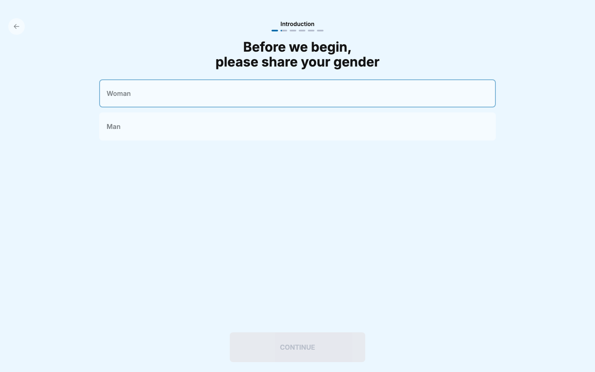
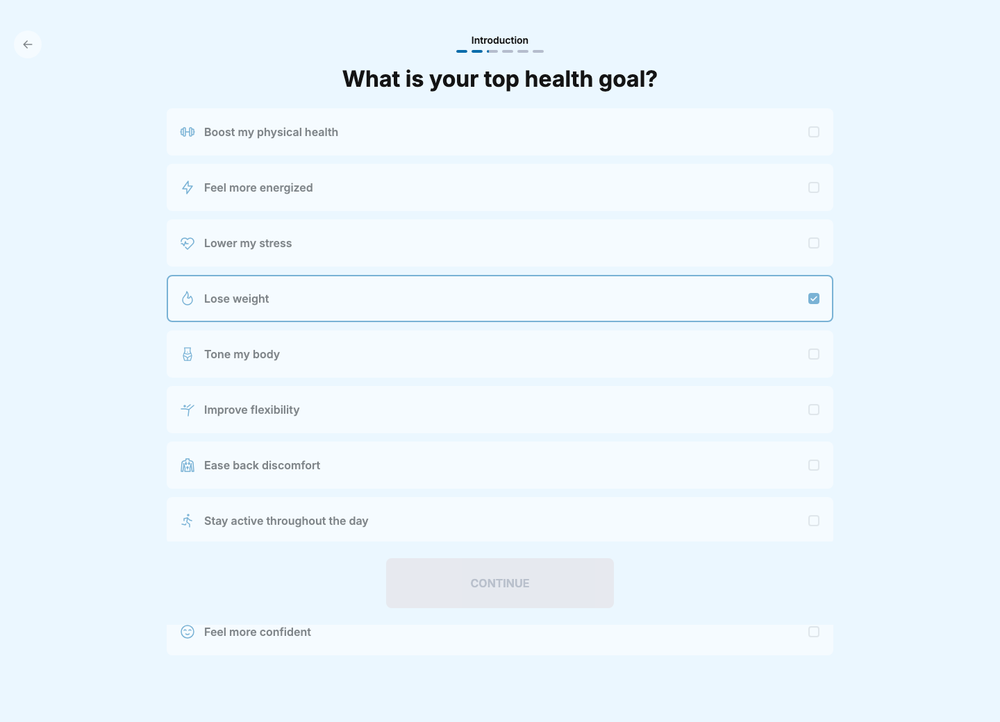
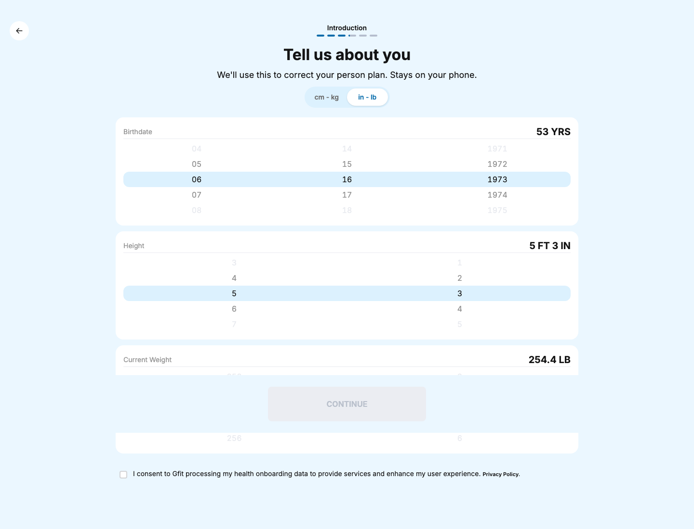
Огромные пустые области на десктопе между заголовком и кнопкой
Где: экраны ввода имени, приветствия, выбора пола — контент занимает верхние ~25% экрана, кнопка в самом низу.
Причина: Та же причина, что F-1 — мобильная вёрстка, растянутая на широкий вьюпорт.
Исправление: Desktop-специфичный layout с вертикальным центрированием карточки квиза в компактном контейнере.
Встречается в сценариях: #27
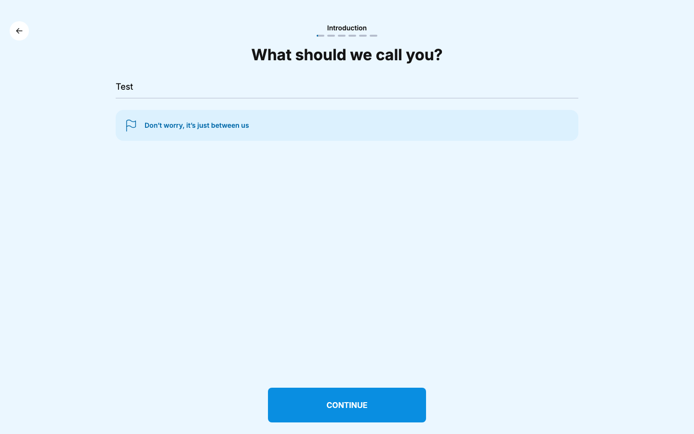
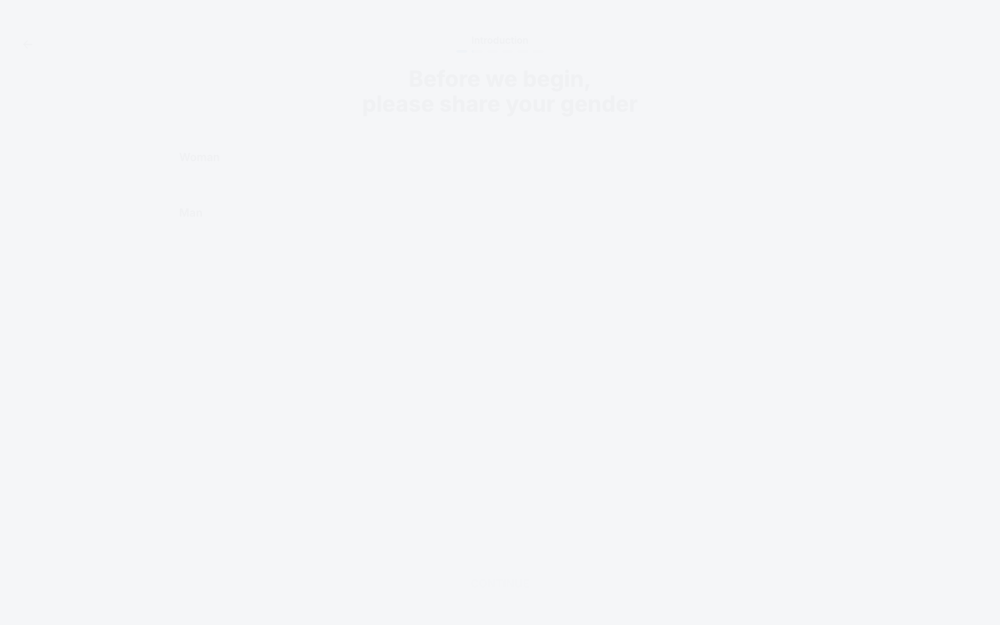
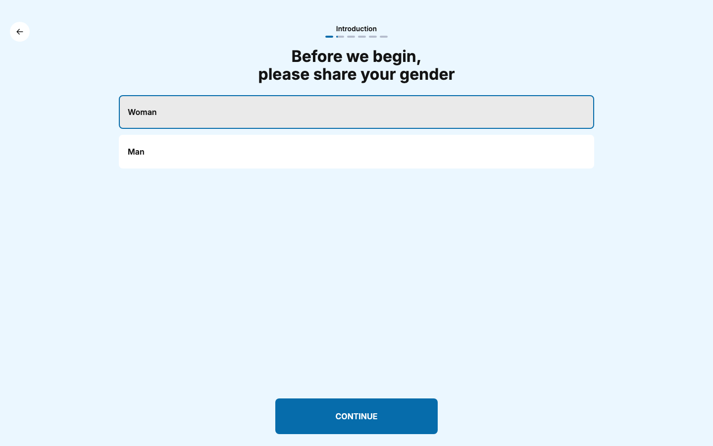
Низкий контраст заголовка на фоне фотографии на лендинге
Где: / — главный экран.
Что происходит: «Welcome to gFit» наложен на фото без подложки/тени — в светлых зонах фото буквы почти сливаются с фоном.
Исправление: Полупрозрачная подложка под текст или градиент-затемнение снизу фото.
Встречается в сценариях: #33
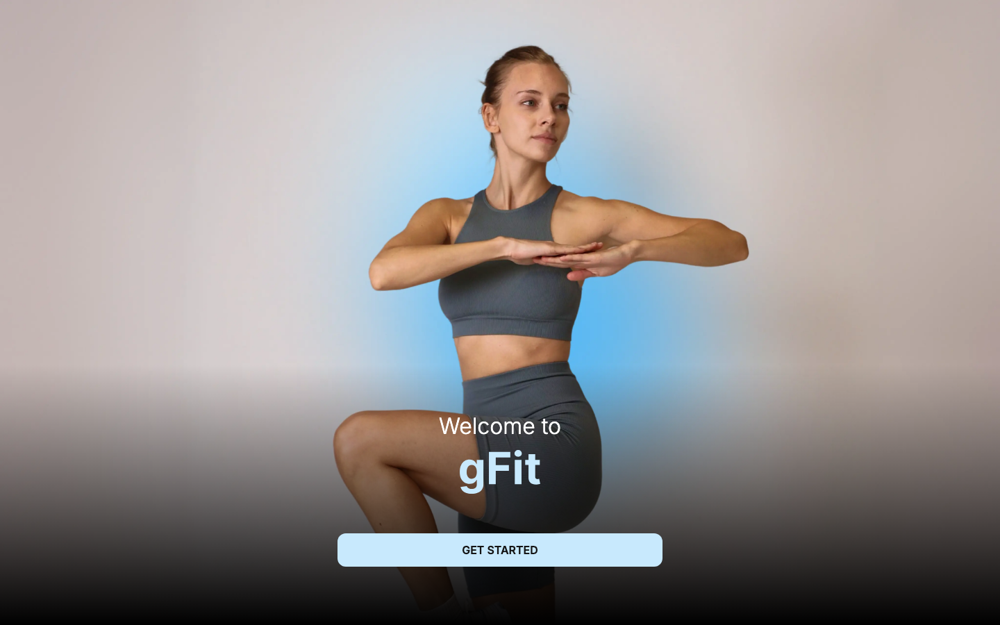
«Privacy Policy.» — тап-таргет меньше рекомендованного минимума
Где: экран биометрии, строка согласия.
Что происходит: Область ссылки ~78×14px — заметно меньше рекомендованных 32×32px на юридически значимом экране согласия.
Исправление: Увеличить кликабельный padding вокруг ссылки.
Встречается в сценариях: #26
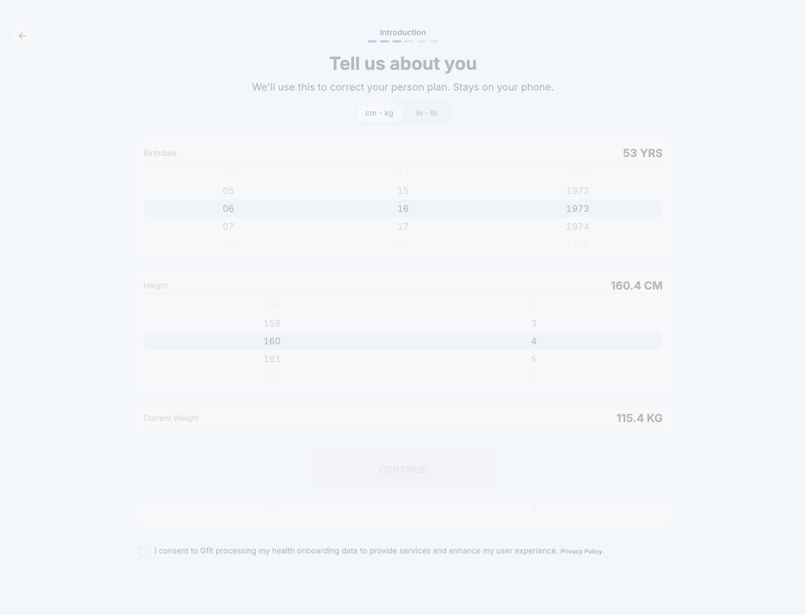
Иконка «запрещающего знака» у позитивного варианта ответа
Где: /start_step, вариант «No, let's create a fitness plan».
Что происходит: Иконка круга с диагональной чертой (символ «запрещено») стоит у позитивного действия — семантически сбивает с толку.
Исправление: Заменить на нейтральную иконку (плюс, звезда, новый документ).
Встречается в сценариях: #7
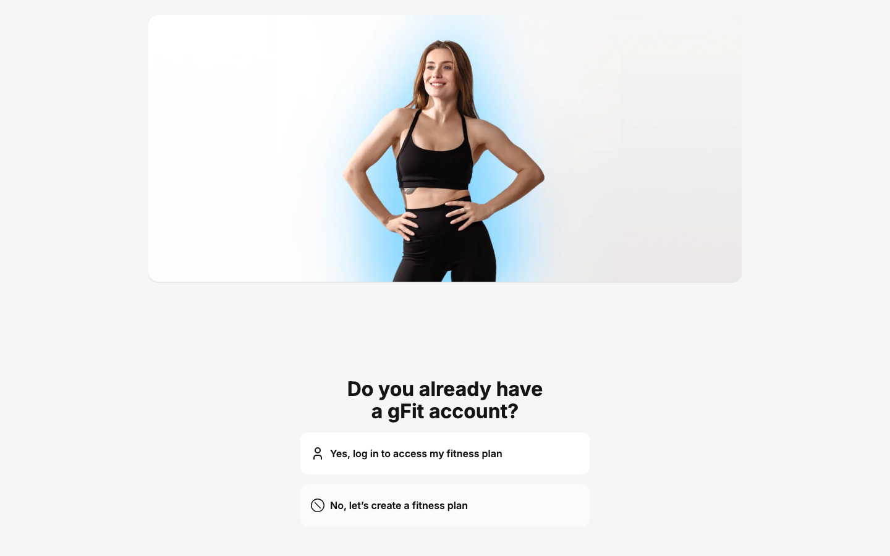
Немаркированная статистика «9/10 users see real results»
Где: экран приветствия.
Что происходит: Крупная маркетинговая цифра без сноски, методологии или источника.
Исправление: Добавить мелкую сноску-дисклеймер или убрать конкретную цифру.
Пикер целевого веса не активирует CONTINUE ни одним из проверенных способов ввода
Где: /start_quiz/weight_goal — «What's your goal weight?».
Что происходит: Клик по конкретной строке пикера визуально меняет значение (113.4 → 100.4 KG) и корректно пересчитывает BMI/бейдж «Lose weight» — то есть внутреннее состояние страницы явно знает новое значение. Но кнопка CONTINUE остаётся disabled после ВСЕХ пяти проверенных способов: обычного клика по строке, синтетического wheel-события, полноценного эмулированного mouse-drag (down → move → up), page.touchscreen.tap(), и низкоуровневого CDP Input.dispatchTouchEvent с 10-шаговым touch-drag (start → 10× move → end) — та же последовательность событий, которую физически шлёт браузер при реальном пальцевом свайпе.
Почему это важно: Это блокирует прохождение воронки дальше этого шага для любого автоматизированного клиента. Поскольку даже низкоуровневая CDP-эмуляция реального тача не сработала (не просто «Playwright не умеет», а «браузер получил настоящие touch-события и всё равно не отреагировал»), вероятность того, что это реальный баг компонента (а не ограничение эмуляции) заметно выросла.
Причина: Компонент пикера, вероятно, требует событие типа scrollend/touchend с конкретными таймингами инерционного скролла (momentum), которое не воспроизводится ни одним из пяти испробованных методов — более узкое требование, чем у пикеров даты рождения/роста/веса на предыдущем экране, где начальные значения принимались без явного взаимодействия.
Исправление: Нужна ручная проверка на реальном устройстве (палец на телефоне или трекпад на Mac) — является ли это реальным багом сайта. Если да — это самый серьёзный найденный дефект: он обрывает воронку полностью, до финального экрана/пейвола, и не только для автоматизации.
Встречается в сценариях: #1, #25
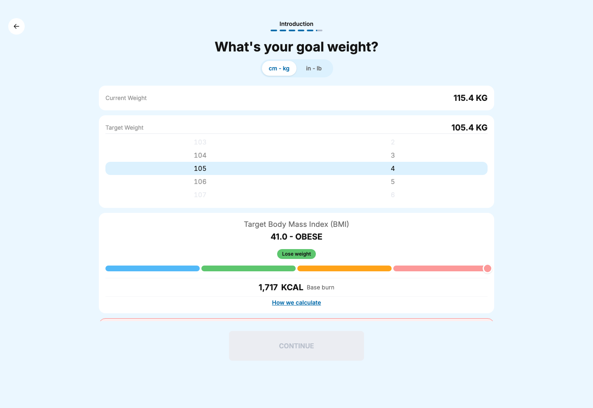
Чекбокс согласия — отсутствует ARIA-состояние (не пресс-кнопка)
Где: /start_quiz/about_you — чекбокс согласия на обработку данных.
Что происходит: Элемент — <button aria-label="Consent to health data processing">. Роль и label заданы корректно, но нет aria-pressed или aria-checked, отражающего текущее состояние (отмечено/не отмечено).
Почему это важно: Пользователь screen reader слышит название контрола, но не может узнать, отмечено ли уже согласие, не проверяя это иным способом.
Исправление: Добавить aria-checked="true/false" (если это концептуально чекбокс — тогда лучше role="checkbox" вместо role="button") или aria-pressed.
Встречается в сценариях: #45
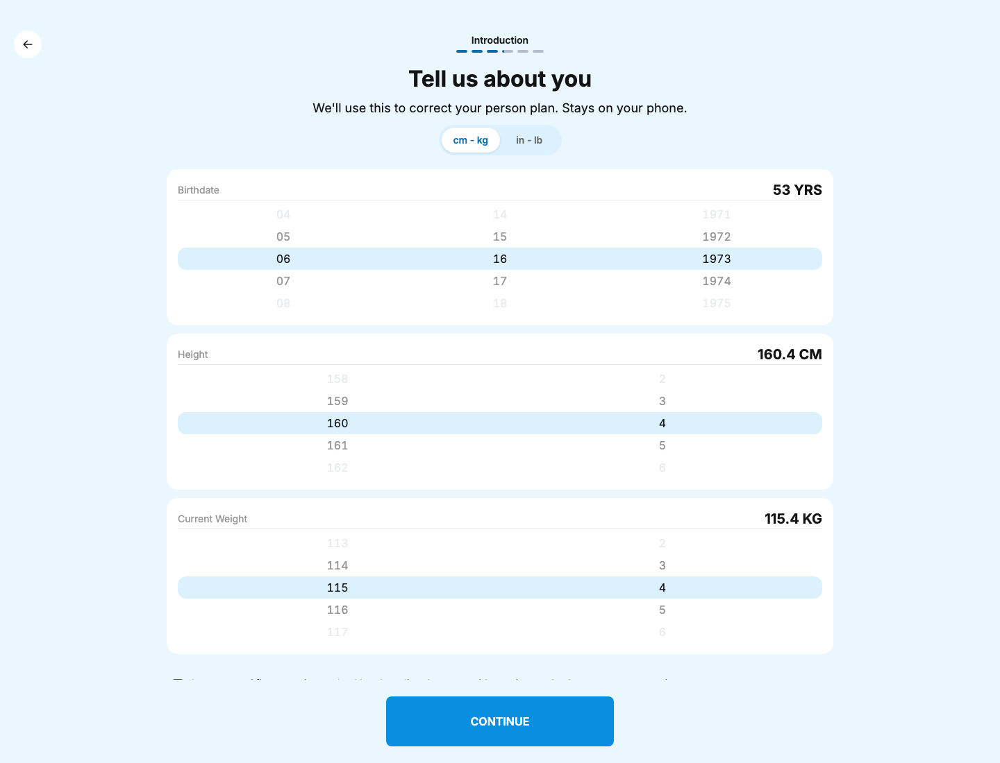
Метрики производительности и целостности
Время полной загрузки лендинга (window load)
1059 мс — DOMContentLoaded 652 мс, TTFB 303 мс. Разовое измерение, чуть выше условного бюджета в 1000 мс.
Console errors за проход (24 экрана: 17 desktop + 7 mobile)
HTTP-ошибки (4xx/5xx) от сайта
Битые изображения (0×0 / decode failure)
Тап-таргеты < 32px
Наложения интерактивных элементов >50%
Что честно исключено из вердикта
*.google-analytics.com и *.facebook.net (один заблокирован самой Meta
как бот-трафик headless-браузера — ожидаемо для автоматизированного прохода) и Next.js
RSC-префетчи (?_rsc=...), обрываемые браузером при переходе на следующий экран —
штатное поведение App Router. Ни один не включён в разделы «Находки» или сводку выше.
Границы аудита
Пройдено: онбординг от лендинга до пикера целевого веса (weight_goal), десктоп 1440×900, без аккаунта и оплаты.
Проверено дополнительно: мобильный viewport (iPhone 13, лендинг → about_you) — F-1 там не воспроизводится; 5 методов ввода на пикере целевого веса — ни один не разблокировал F-7.
Не оценено (Skipped): форма входа/регистрации; всё после экрана целевого веса; планшетные разрешения; доступность (клавиатура, screen reader полностью); кроссбраузерность за пределами Chromium (Firefox, Safari).
Скриншоты прохода — desktop 17 экранов
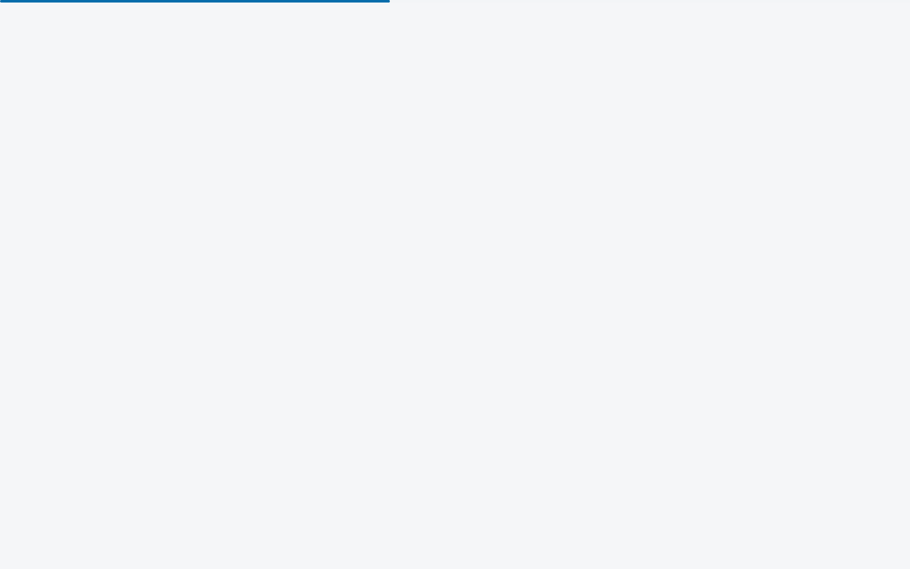
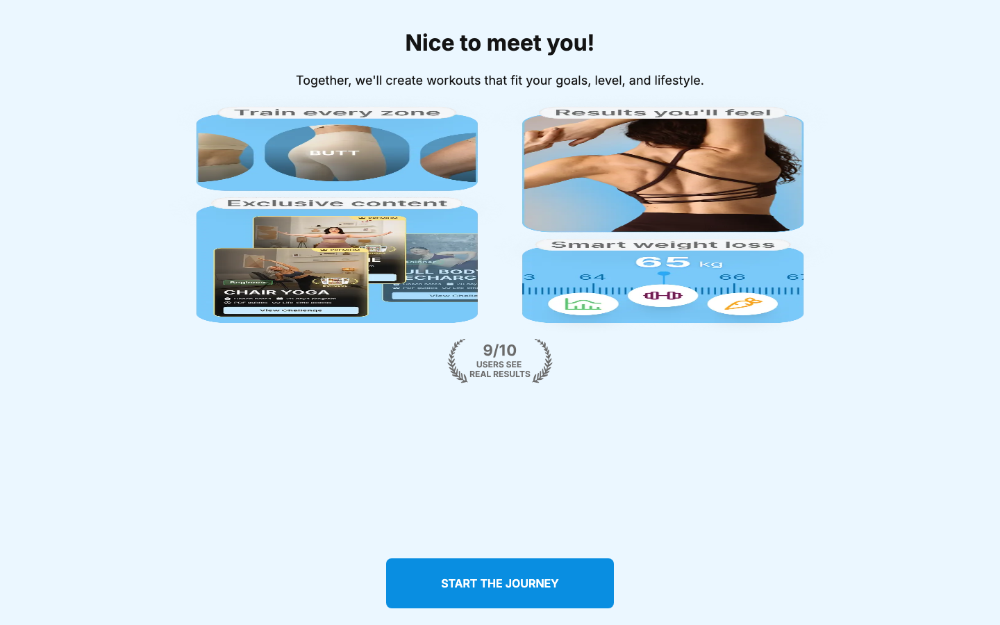
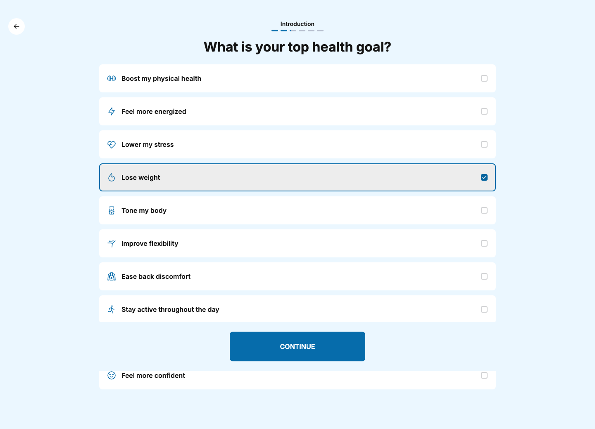
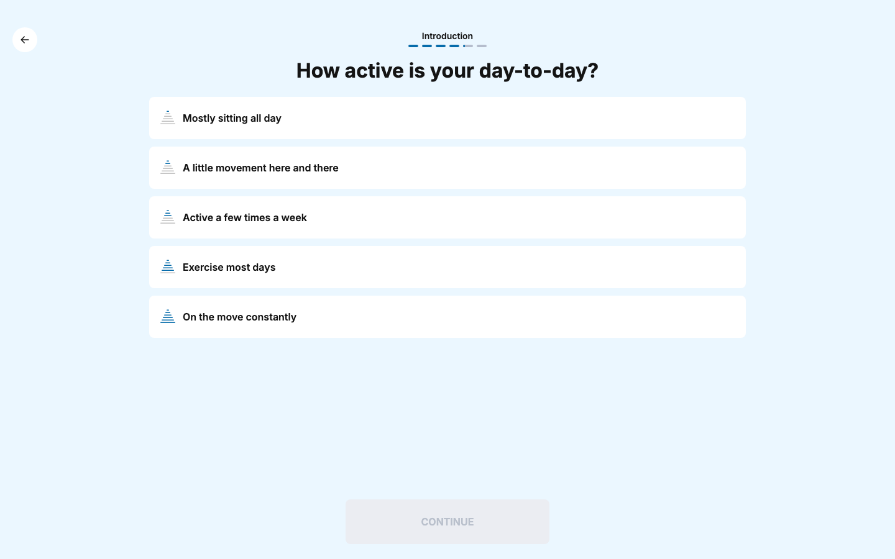

Скриншоты прохода — mobile iPhone 13, 390×844
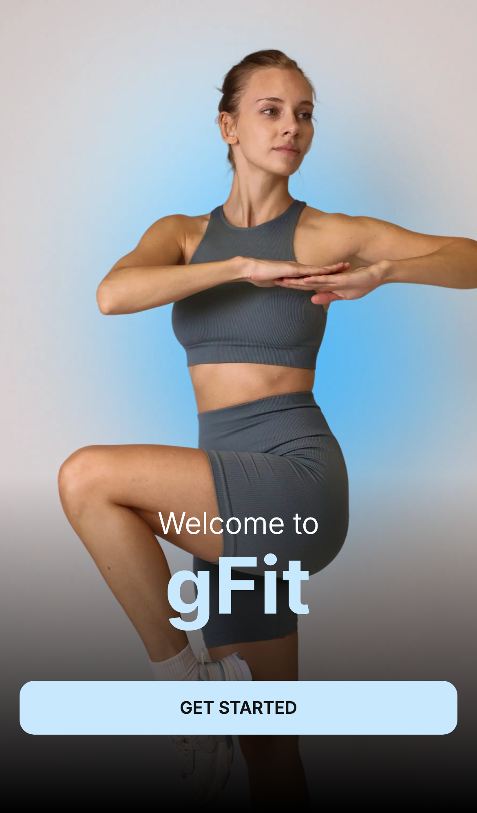
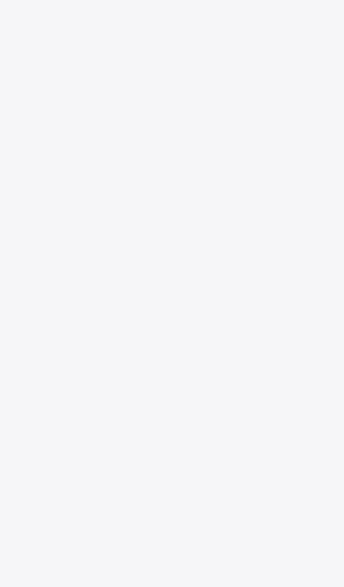
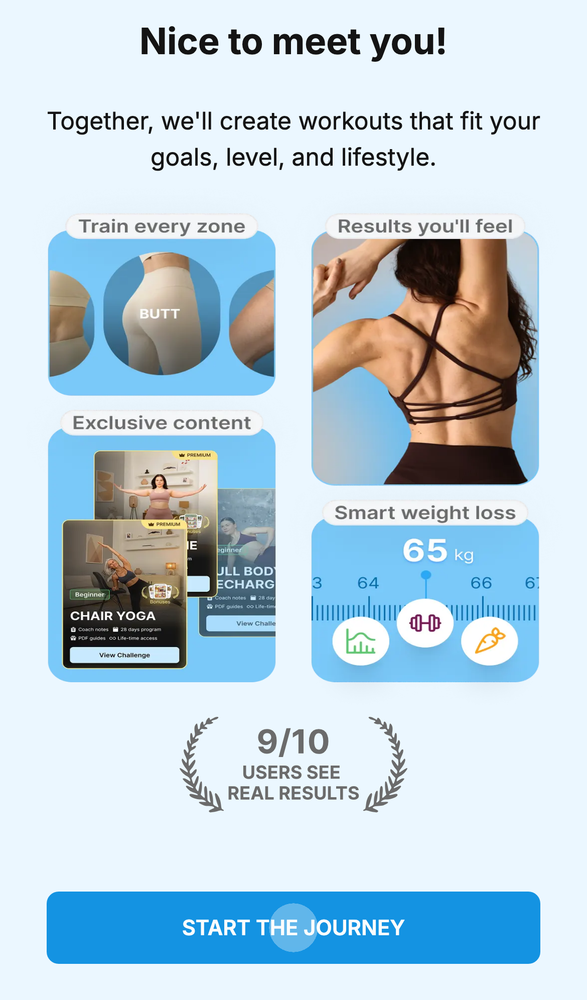
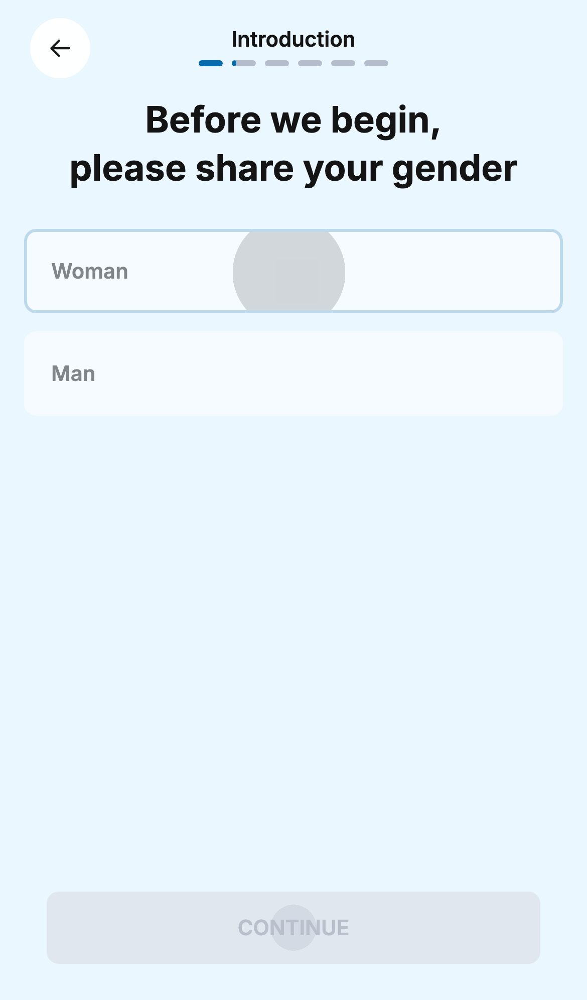
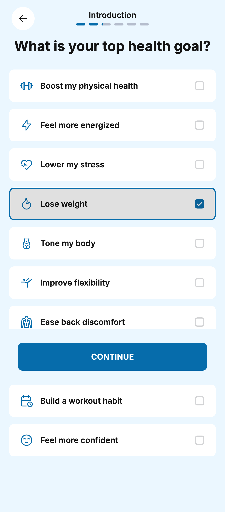
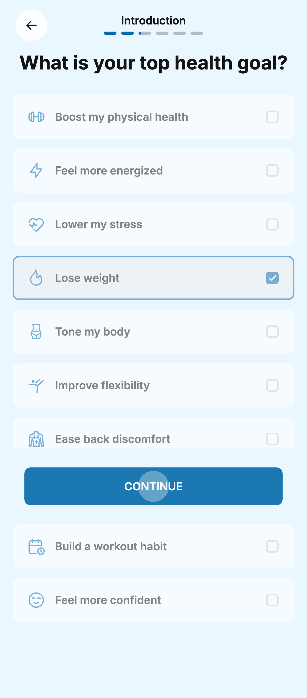
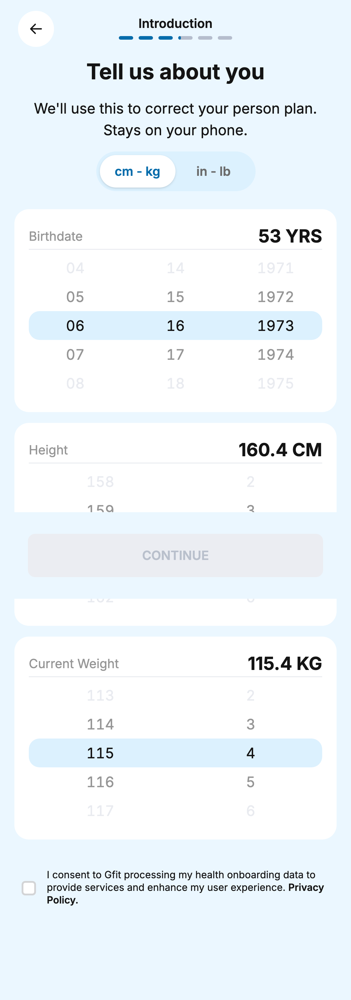